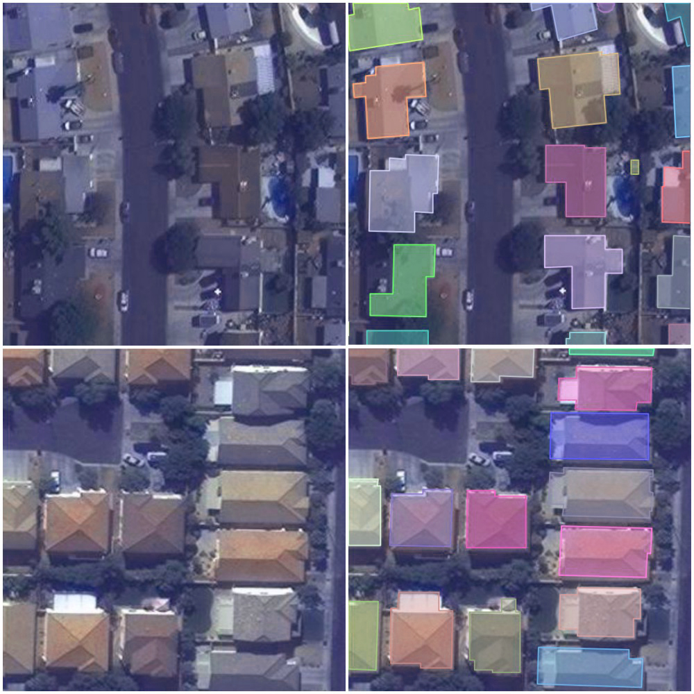

Building Missing Maps with Machine Learning
Completed
Submissions
Participants
Views
Overview
UPDATE: Submissions Instructions for ROUND 2 are available at : https://github.com/crowdAI/mapping-challenge-round2-starter-kit
UPDATE: The prizes for this challenge have been updated and can be found on the bottom of this page.
We are in a period of increasing humanitarian crises, both in scale and number. Natural disasters continue to increase in frequency and impact, while long-term and reignited conflicts affect people in many parts of the world. Often, accurate maps either do not exist or are outdated by disaster or conflict.
Humanity & Inclusion is an aid organization working in some 60 countries, alongside people with disabilities and vulnerable populations. Our emergency sector responds quickly and effectively to natural and civil disasters.
-
Many parts of the world have not been mapped; especially the most marginalized parts, that is, those most vulnerable to natural hazards. Obtaining maps of these potential crisis areas greatly improves the response of emergency preparedness actors.
-
During a disaster it is extremely useful to be able to map the impassable sections of road for example, as well as the most damaged residential areas, the most vulnerable schools and public buildings, population movements, etc. The objective is to adapt as quickly as possible the intervention procedures to the evolution of the context generated by the crisis.
-
In the first days following the occurrence of a disaster, it is essential to have as fine a mapping as possible of communication networks, housing areas and infrastructures, areas dedicated to agriculture, etc.
Today, when new maps are needed they are drawn by hand, often by volunteers who participate in so called Mapathons. They draw roads and buildings on satellite images, and contribute to Open StreetMap.
For instance, Humanity & Inclusion has been involved in organising numerous Mapathons to draw new maps for our clearance teams in Laos.
In this challenge we want to explore how Machine Learning can help pave the way for automated analysis of satellite imagery to generate relevant and real-time maps.
Task
Satellite imagery is readily available to humanitarian organisations, but translating images into maps is an intensive effort. Today maps are produced by specialized organisations or in volunteer events such as mapathons, where imagery is annotated with roads, buildings, farms, rivers etc.
Images are increasingly available from a variety of sources, including nano-satellites, drones and conventional high altitude satellites. The data is available: the task is to produce intervention-specific maps with the relevant features, in a short timeframe and from disparate data sources.

In this challenge you will be provided with a dataset of individual tiles of satellite imagery as RGB images, and their corresponding annotations of where an image is there a building. The goal is to train a model which given a new tile can annotate all buildings.
Also, in context of this challenge, to make the barrier to entry much lower, we tried to remove all the domain specific jargon of Remote Sensing and Satellite Imagery Analysis, and are presenting this as a problem of Object Detection and Object Segmentation in Images.
The idea being, once we collectively demonstrate that an approach works really well on RGB images with just 3 channels of information, we can then work on extending it to multi-channel information from rich satellite imagery.
Datasets
You can download the datasets in the Datasets Section. You are provided with :
-
train.tar.gz: This is the Training Set of 280741 tiles (as 300x300 pixel RGB images) of satellite imagery, along with their corresponding annotations in MS-COCO format -
val.tar.gz: This is the suggested Validation Set of 60317 tiles (as 300x300 pixel RGB images) of satellite imagery, along with their corresponding annotations in MS-COCO format -
test_images.tar.gz: This is the Test Set for Round-1, where you are provided with 60697 files (as 300x300 pixel RGB images) and your are required to submit annotations for all these files.
For more details about the dataset, and submission procedures etc, please refer to the following notebooks :
- Dataset Utils
- Random Submission
- Train Mask-RCNN
- Installation
- Training
- Prediction & Submission
- NOTE : This is in a separate repository, and we have also now added the pretrained weights from the baseline submission to the datasets page.
Evaluation Criteria
For for a known ground truth mask , you propose a mask , then we first compute (Intersection Over Union) :
measures the overall overlap between the true region and the proposed region. Then we consider it a True detection, when there is atleast half an overlap, or when
Then we can define the following parameters :
-
Precision ()
-
Recall ()
.
The final scoring parameters and are computed by averaging over all the precision and recall values for all known annotations in the ground truth.
Challenge Rounds
Round 1
We will stop accepting submissions for Round 1 on June 1, 2018. All participants of Round 1 will be invited to complete in Round 2.
For instructions on submitting solutions for Round-2, please refer to the mapping-challenge-starter-kit.
Note: We will be adding more content to the starter kit to help you get started in the challenge. So please do keep a close eye on the starter-kit for updates. In the meantime, you can have a look at the examples of cocoapi on how to easily parse and explore the datasets.
Round 2
Round 2 participation is open to all. Participants are required to submit their code and models which will be internally tested by UNOSAT and UN Global Pulse on a dataset (in a similar format as the currently released data) of an undisclosed location.
Starter-Kit for Round-2 can be found at : https://github.com/crowdAI/mapping-challenge-round2-starter-kit
Timeline
- Round 1 : 28.03.2018 - 01.06.2018
- Round 2 : 23.07.2018 - 20.08.2018
- Announcement of Overall Results : 20.08.2018
Partners

Rules
The following rules have to be observed by all participants:
- Participants are allowed at most 5 submissions per day.
- Participants are welcome to form teams. Teams should submit their predictions under a single account. The submitted paper will mention all members.
- Participants have to release their solution under an Open Source License of their choice to be eligible for prizes. We encourage all participants to open-source their code!
- Participants are not allowed to use any other datasets other than the ones released in context of this challenge. The use of pre-trained models is nevertheless permitted.
- While submissions by Admins and Organizers can serve as baselines, they won’t be considered in the final leaderboard.
- In case of conflicts, the decision of the Organizers will be final and binding.
- Organizers reserve the right to make changes to the rules and timeline.
- Violation of the rules or other unfair activity may result in disqualification.
Prizes
UPDATE
The prizes have been updated, as follows:
Top-1 participant of Round 2: Invitation to the Applied Machine Learning Days 2019 at EPFL, Switzerland in January 2019, with travel and accommodation covered.
Top-5 participants of Round 2: Invitation to present at the IEEE DSAA 2018 in Turin, Italy, October 1-4, 2018, with conference registration, travel and accommodation covered (up to EUR 1000). This prize is sponsored by Humanity & Inclusion.
Top-5 participants of Round 2: Invitation to submit a paper describing their solution to be published in the proceedings of IEEE DSAA 2018, Turin, Italy.
Top Community Contributor: Invitation to the IEEE DSAA 2018 in Turin, Italy, October 1-4, 2018, with travel and accommodation covered (up to EUR 1000). This prize is aimed to reward the participant or team who contributed the most for the community to this challenge (e.g. releasing own code openly during challenge, helping other paricipants, etc)
All participants (Round 1 and 2) : Certificate of participation from Handicap International, UNOSAT, UN Global Pulse, EPFL and crowdAI.
Starter Kit
A starter kit has been prepared which explains all the nuts and bolts required to get started in the challenge. It can be accessed at : https://github.com/crowdAI/mapping-challenge-starter-kit
Starter-Kit for Round-2 can be found at : https://github.com/crowdAI/mapping-challenge-round2-starter-kit
Resources
Here are some interesting blog posts written by participants:
Here is an open solution for this challenge, proposed by neptune.ml:
Acknowledgements
A big shout out to our awesome community members @MasterScat (Florian Laurent), Snigdha Dagar, and Iuliana Voinea, for their help in preparing the datasets and designing the challenge.
Contact Us
- Gitter Channel : crowdAI/crowdai-mapping-challenge
- Technical issues : https://github.com/crowdAI/mapping-challenge-starter-kit/issues
- Discussion Forum : https://www.crowdai.org/challenges/mapping-challenge/topics
We strongly encourage you to use the public channels mentioned above for communications between the participants and the organizers. In extreme cases, if there are any queries or comments that you would like to make using a private communication channel, then you can send us an email at :